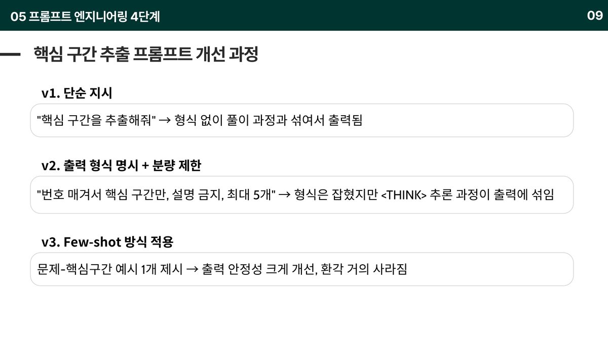
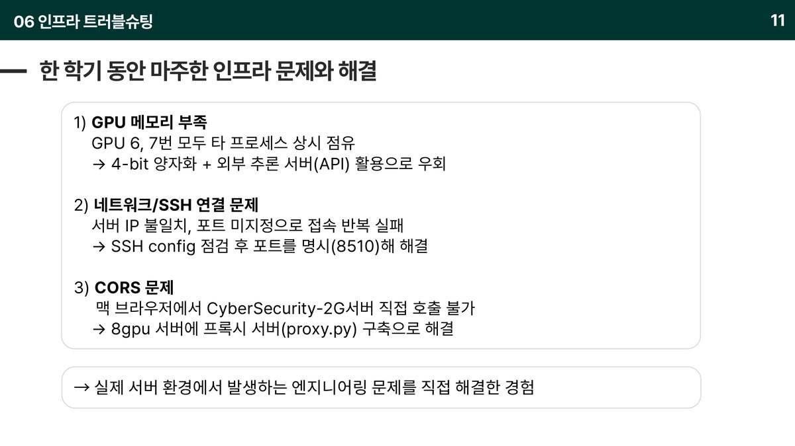
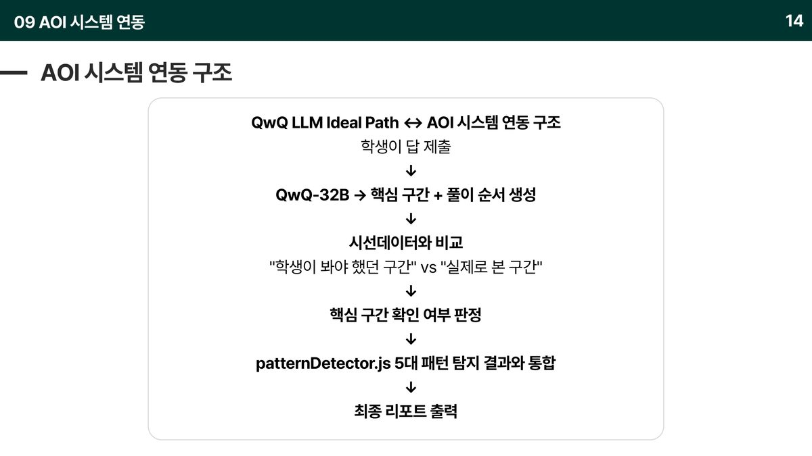
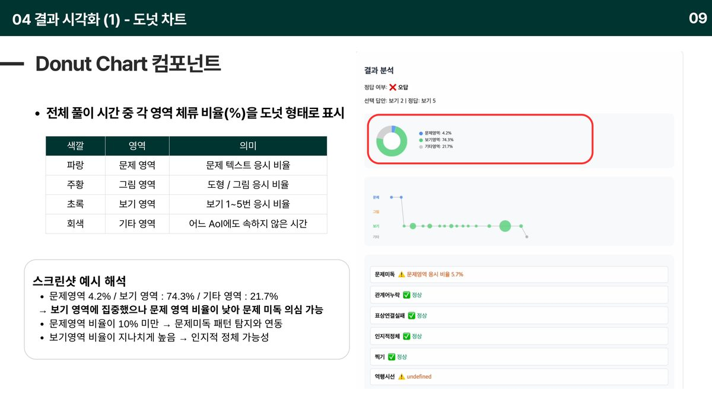
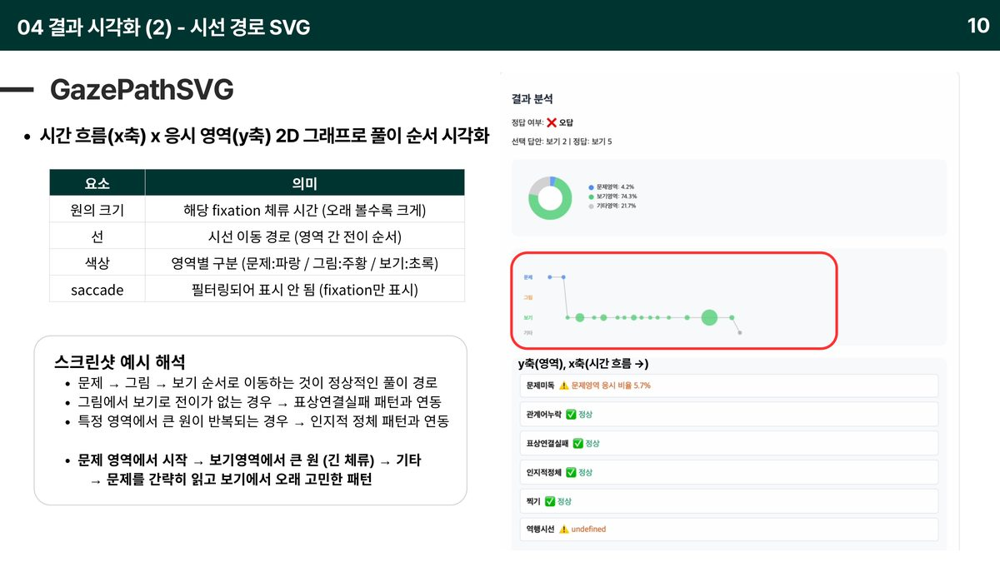
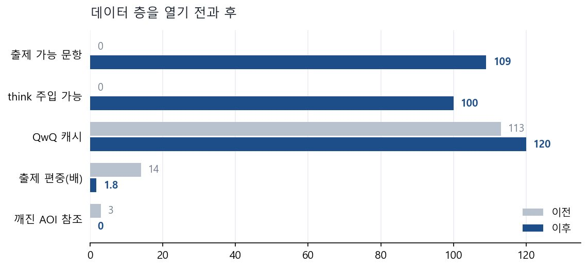

FHTC — 시선으로 오답 원인을 진단하는 시스템
math_gaze초등학생이 수학 문제를 풀 때 시선이 어디로 향하는지로 오답 원인을 진단하고 메타인지를 돕는 시스템
- 학생이 왜 틀렸는지를 답이 아니라 시선으로 진단하는 졸업 프로젝트입니다. 한 학기 동안 4번 발표하며 만들었습니다.
- LLM이 "봐야 했던 구간"을 뽑고, 시선 데이터가 "실제로 본 구간"을 기록해 둘을 대조합니다. 차이가 곧 오답 원인입니다.
- 모델 선정에 한 번 실패하고 원인을 분석해 갈아탔으며, 프롬프트를 4단계로 고쳐 환각을 없앴고, 인프라 문제 3건을 직접 뚫었습니다.


문제 🤔
핵심 아이디어는 대조입니다. LLM이 문제를 읽고 "이 문제를 풀려면 어디를 봐야 하는가"(Ideal Path)를 뽑고, 시선 추적이 "학생이 실제로 어디를 봤는가"를 기록합니다. 둘의 차이가 오답 원인입니다. 그런데 이걸 성립시키려면 LLM이 핵심 구간을 정확히 뽑아야 하고, 시선 좌표가 낱말 단위로 정확히 매핑돼야 합니다. 한 학기는 이 두 조건을 만드는 과정이었습니다.
접근 🛠
- 1차 (3월) — 문제 정의. 오답 원인을 문제 미독 · 관계어 누락 · 표상 연결 실패 · 인지적 정체 · 찍기 5가지 패턴으로 정의했습니다.
- 2차 (5월) — 아키텍처 분리.
useGazeTracker/focusLog/patternDetector로 좌표 수집·기록·판정을 분리하고 AOI 4영역과 1차 탐지 로직을 구현했습니다. - 3차 (5월) — 데이터 연동 + LLM 도입. AI Hub 원본을 프론트가 바로 읽을 수 있는 구조로 바꾸는
convert_aihub.py파이프라인을 만들고, LLM 관계어 추출과 패턴 판정을 붙였습니다. - 4차 (6월) — LLM 고도화 + 실제 시선 연동. 문제 유형 분류를 제거하고 QwQ-32B로 전환했으며, 마우스를 Chrome 확장 실시간 시선 추적으로 교체했습니다.
- 결과는 도넛차트(영역별 체류 비율), 시선 경로 SVG(x=시간, y=영역, 원 크기=체류시간), 패턴 리포트, AI 처방으로 보여줍니다.
결과 📈
한 학기 동안 5대 패턴 정의 → 아키텍처 분리 → 데이터 파이프라인 → LLM 연동 → 실제 시선 추적 연동까지 통합했습니다. QwQ-32B가 환각 없이 원문 표현 그대로 핵심 구간을 추출하게 만들었고, 시선 데이터와 대조해 핵심 구간 확인 여부(✅/❌)와 AI 처방까지 나오는 통합 리포트를 완성했습니다. 이후 데이터 층을 맡아 출제 가능 문항을 0 → 109로 열고 출제 편중을 14배 → 1.8배로 낮췄습니다.
이 프로젝트에서 제가 한 것 ✍
- Phase 1 아키텍처 분리 —
useGazeTracker훅으로 좌표 수집과 분석 레이어 분리, AOI 4영역 설계 - Phase 2 5대 오답 패턴 탐지 로직 설계 및 구현
- Phase 3
focusLogs시계열 스키마 확정 + 백엔드 전송 구조 - Phase 4 결과 리포트 — 패턴별 true/false/null 3상태 표시
- AI Hub 데이터 변환 파이프라인, LLM 모델 선정·교체, 프롬프트 4단계 개선, 인프라 문제 3건 해결
- 이후 데이터·검증 레인 전담 — 출제 가능 문항 0 → 109, 재발 방지 검사 스크립트 커밋
기술 선택과 판단 근거 🧭
왜 그 방법을 택했는지, 무엇을 택하지 않았는지 적었습니다.
문제 유형 분류 단계를 통째로 제거했다
처음에는 유형(분수·도형·연산·문장제)을 먼저 분류해두면 LLM이 그 틀에 맞춰 더 잘 판단할 거라 생각했습니다. 실제로는 반대였습니다. 키워드 매칭 분류가 LLM 호출 이전에 있어서 이미 잘못 분류된 채로 전달됐고(문장제인데 '나눗셈' 때문에 연산으로 분류), 미리 정한 틀이 LLM이 문맥 전체를 보는 것을 오히려 제약했습니다. 분류 단계를 삭제해 오류의 원천 자체를 없앴습니다.
수학 특화 모델을 버리고 추론 특화 모델로 갈아탔다
1차 후보는 Qwen2.5-Math-7B였습니다. 수학 벤치마크 성능이 높고 파라미터가 적어 4-bit 양자화로 14GB → 약 4GB까지 줄여 단일 GPU에 올렸습니다. 그런데 수식을 푸는 능력은 있어도 "핵심만 추출하라"는 지시를 따르는 능력이 약해 문제와 무관한 텍스트를 무한 생성했습니다. 도메인 특화가 지시 이해를 보장하지 않는다는 걸 확인하고 QwQ-32B로 교체해 해결했습니다.
핵심 구간은 원문 그대로, 풀이 순서는 모델 자율로 역할을 나눴다
핵심 구간을 모델이 바꿔 쓰면 시선 데이터와 매칭이 안 됩니다. 그래서 핵심 구간은 원문 표현을 그대로 쓰게 강제하고, 반대로 풀이 순서는 모델이 판단하도록 열어 뒀습니다. 두 항목의 성격이 다르기 때문입니다.
더 자세히
관심 있는 항목만 펼쳐 보세요.
이 프로젝트가 시작된 배경
학생이 문제를 틀렸을 때 답안지만 봐서는 왜 틀렸는지 알 수 없습니다. 문제를 안 읽은 것인지, '이상'·'남은' 같은 관계어를 놓친 것인지, 그림과 보기를 연결하지 못한 것인지, 그냥 찍은 것인지 — 원인이 다르면 필요한 피드백도 다릅니다. FHTC는 시선이 어디에 얼마나 머물렀는지로 그 원인을 구분합니다.
기술 판단 더 보기 4
LLM 판정을 우선하되 실패하면 규칙 기반으로 되돌아가게 했다
1차 규칙 기반 판정을 즉시 보여주고, LLM 최종 판정이 오면 그것으로 덮어씁니다. LLM 호출이 실패하면 1차 결과가 그대로 유지됩니다. 화면이 비거나 멈추지 않습니다.
판정할 수 없는 패턴은 null로 남겨뒀다
관계어 누락은 같은 단어라도 문제 맥락에 따라 중요할 수도 아닐 수도 있습니다. detected를 임의로 정하지 않고 null(LLM 분석 필요)로 두어 리포트에 그대로 표시했습니다.
역행 시선을 오답 패턴에서 빼고 긍정 신호로 재해석했다
다시 돌아가 보는 것은 오답 신호가 아닙니다. 문제 텍스트 역행은 꼼꼼히 다시 읽은 것이고 보기 역행은 고민한 행동입니다. 5대 패턴에서 빼고 '고민한 답안' 산출에 썼습니다 — 점수 = 응시시간 + 교차횟수 × 500 + 역행횟수 × 300.
SDK 교체 지점을 함수 하나로 좁혀 뒀다
processGazePoint 하나에 AOI 판별과 로그 업데이트를 모아, 입력 소스가 마우스에서 실제 시선 장치로 바뀔 때 이 함수만 교체하면 나머지가 그대로 동작하게 했습니다. 실제로 4차에서 그렇게 교체했습니다.
막혔던 지점과 해결 과정 5
모델을 잘못 골랐고, 왜 틀렸는지 분석해서 갈아탔다
수학 특화 모델이면 수학 문제를 잘 다룰 거라 생각했습니다. GPU가 부족해 4-bit 양자화까지 해가며 Qwen2.5-Math-7B를 올렸는데, 정작 "핵심만 뽑아라"는 지시를 따르지 못하고 문제와 무관한 텍스트를 끝없이 생성했습니다. 원인은 도메인 특화 ≠ 지시 이해 능력이었습니다. 추론 특화인 QwQ-32B로 바꾸자 해결됐습니다. 다만 32B는 GPU 20GB 이상이 필요해 로컬에 못 올렸고, 별도 서버에서 Ollama로 돌아가는 것을 HTTP API로 호출하는 구조로 우회했습니다.
프롬프트를 네 번 고쳐서 환각을 없앴다
v1 "핵심 구간을 추출해줘" → 형식 없이 풀이 과정과 섞여 나옴. v2 번호 매기기 · 설명 금지 · 최대 5개 → 형식은 잡혔지만 <think> 추론 과정이 출력에 섞임. v3 Few-shot 예시 1개 추가 → 출력이 크게 안정되고 환각이 거의 사라짐. v4 후처리 + 항목 역할 분리 + 문제만/문제+보기 두 버전 비교 실험까지 구현. 샘플 10개로 형식 이탈이 없는지 직접 확인했습니다.
서버에서 막힌 것 세 가지를 직접 뚫었다
① GPU 메모리 부족 — 8GPU 서버의 6·7번이 상시 점유 상태라 4-bit 양자화와 외부 추론 서버 호출로 우회했습니다. ② SSH 접속 실패 — 서버 IP 불일치와 포트 미지정으로 반복 실패해, config를 점검하고 포트를 명시(8510)해 해결했습니다. ③ CORS 차단 — 브라우저에서 추론 서버를 직접 호출할 수 없어 8GPU 서버에 프록시(proxy.py)를 세워 우회했습니다.
탐지 알고리즘을 검증할 실험을 설계했다
임계값을 감으로 정하고 싶지 않아서 검증 실험을 짰습니다. 4개 유형 × 5문항 = 20문항이고, 각 유형마다 정상 풀이 1문항을 섞어 오탐(FP)을 잡을 수 있게 했습니다. 테스터가 특정 패턴을 의도적으로 연기하고, 결과를 TP/FP/FN으로 분류해 정밀도·재현율·F1을 계산합니다. FP가 많으면 임계값을 올리고 FN이 많으면 내리는 조정 방향까지 표로 정리했습니다.
에러가 안 나는 고장이 제일 오래 살았다
데이터 층을 열 때 찾은 문제들은 전부 조용했습니다. 확장이 보낸 시선 좌표의 90%를 버리고 있었는데 좌표는 계속 들어오고 로그도 쌓였습니다. 교차 대조 12건이 전부 실패했는데도 exit 0과 빈 결과 파일 때문에 성공으로 기록됐습니다. 문제가 있으면 종료 코드 1을 내는 검사 스크립트를 만들고, 일부러 데이터를 깨뜨려 실제로 걸리는 것까지 확인했습니다.
데이터
problem.json + figure.png. 도형 문제일 때만 BBox로 이미지 크롭c-0-t0-num)gazeConfig로 문제별 조정화면 · 시각화 더 보기 9









이 결과가 틀렸을 수 있는 지점
- AOI 영역이 좁아 미세한 시선 떨림을 흡수하지 못하고 인식에 실패하는 경우가 있습니다. 마진 조정과 입력 감도 조율이 필요합니다.
- 실험 표본이 1,032개 중 50개입니다. 이미지 포함 4,075개로 확장할 계획입니다.
- 패턴 최종 판정이 LLM 1회 판정입니다. LLM as a Judge(별도 LLM이 판정을 재검증)를 도입할 예정입니다.
- 이미지 문제는 아직 처리하지 못합니다. ViT / DINOv2 기반 확장을 검토 중이며, attention map으로 핵심 영역이 드러나는 특성 때문에 I-JEPA보다 DINOv2를 먼저 실험할 계획입니다.
fixationThresholdMs: 300같은 임계값에 아직 데이터 근거가 없습니다. 위 검증 실험으로 조정할 예정입니다.- 보기에 중점을 둔 문제에서는 핵심 구간 타겟팅이 약합니다. 프롬프트 V1/V2 비교 실험에서 확인된 한계입니다.
회고
가장 크게 배운 건 모델을 벤치마크 점수가 아니라 내가 시킬 일의 성격으로 골라야 한다는 것이었습니다. 수학 특화 모델이 수학 문제에서 실패하고 추론 특화 모델이 성공한 경험이 그걸 가르쳐 줬습니다. 그리고 판정할 수 없는 것을 판정한 척하지 않는 것 — 관계어 누락을 null로 남기고, LLM 실패 시 규칙 기반으로 되돌아가게 하고, 미구현을 발표에서 먼저 밝힌 것이 모두 같은 원칙이었습니다.